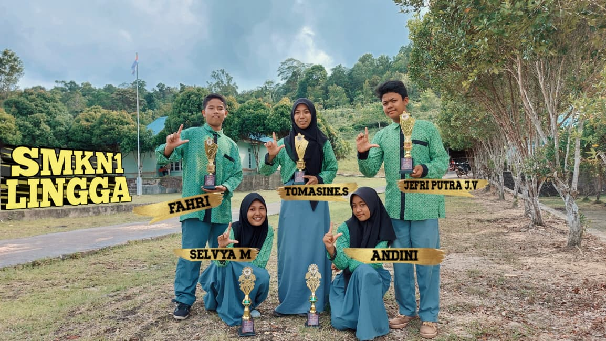
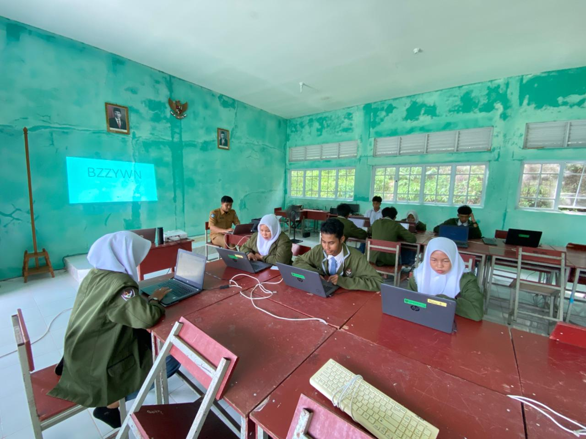

Galeri Kegiatan
Dokumentasi kegiatan dan fasilitas sekolah

Juara Pertama - Prestasi Siswa

Kegiatan Pembelajaran Outdoor

TKA 2025
Mencetak generasi ahli di bidang Agribisnis Ternak Ruminansia yang profesional, berakhlak mulia, dan siap berkontribusi untuk kemajuan daerah Kepulauan Riau.
Informasi terkini seputar kegiatan sekolah
Pendaftaran siswa baru telah dibuka untuk tahun ajaran 2026/2027. Segera daftarkan diri Anda dan bergabung bersama kami!
Siswa SMK Negeri 1 Lingga meraih juara 1 dalam lomba inovasi peternakan tingkat Provinsi Kepulauan Riau.
Siswa kelas XI melakukan kunjungan industri ke peternakan modern untuk memperkaya pengalaman praktis di lapangan.
Mengenal lebih dekat SMK Negeri 1 Lingga
Terwujudnya insan yang berakhlak mulia, menguasai IPTEK dan berjiwa kewirausahaan bidang agribisnis dan agro teknologi
SMK Negeri 1 Lingga berlokasi di Dusun II Mulyasari Desa Bukit Langkap Kecamatan Lingga Timur Kabupaten Lingga. SMK Negeri 1 Lingga merupakan salah satu Instansi pendidikan menengah yang berada di Kecamatan Lingga Timur. SMK Negeri 1 Lingga merupakan sekolah yang mempunyai jurusan yang sangat sesuai dengan budaya dan karakteristik desa yang mayoritas penduduknya adalah petani dan peternak.
Dalam kegiatan sehari-hari, warga sekolah dan masyarakat sekitar menggunakan bahasa Indonesia, bahasa Melayu, dan bahasa Jawa. Peserta didik SMK Negeri 1 Lingga seluruhnya beragama Islam. Mereka berlatar belakang suku dan budaya yang beragam yaitu Melayu, Jawa, Sunda, dan Flores. Sebagian besar merupakan lulusan dari SMP pendukung yang berada disekitar wilayah Kecamatan Lingga Timur.
Jurusan yang tersedia di SMK Negeri 1 Lingga
Program keahlian yang fokus pada pemeliharaan, pengelolaan, dan pengembangan usaha peternakan ternak ruminansia seperti sapi, kambing, dan domba. Siswa akan dibekali dengan pengetahuan dan keterampilan yang komprehensif dalam bidang peternakan modern.
Ahli dalam pemeliharaan ternak, manajemen pakan, kesehatan ternak, dan pengolahan hasil peternakan
Peternak mandiri, supervisor peternakan, teknisi inseminasi buatan, quality control produk ternak
Kandang praktik, laboratorium pakan, klinik hewan, dan kerjasama dengan peternakan mitra
Tim pengajar yang berpengalaman dan profesional
Klik untuk melihat data
Klik untuk melihat data
Klik untuk melihat data
Klik untuk melihat data
Wadah kolaborasi dan pengembangan profesional guru
Modul tentang metode pembelajaran inovatif untuk meningkatkan partisipasi siswa di kelas.
Panduan lengkap menyusun instrumen penilaian yang valid dan reliabel sesuai kurikulum Merdeka.
Tutorial penggunaan platform digital dan media pembelajaran interaktif di era modern.
Template dan panduan membuat modul ajar yang sesuai dengan Kurikulum Merdeka Belajar.
Panduan merancang dan melaksanakan P5 yang menarik dan bermakna bagi siswa SMK.
Teknik-teknik refleksi diri untuk pengembangan profesional dan perbaikan proses mengajar.
Agribisnis Ternak Ruminansia - SMK Negeri 1 Lingga
Program Keahlian Agribisnis Ternak Ruminansia mempersiapkan siswa untuk menjadi tenaga ahli profesional di bidang peternakan khususnya ternak ruminansia (sapi, kambing, domba). Program ini menggabungkan teori ilmiah dengan praktik lapangan yang intensif, menyiapkan lulusan yang siap kerja, mandiri berwirausaha, maupun melanjutkan ke perguruan tinggi.
Mencetak tenaga terampil di bidang budidaya, manajemen, dan pengolahan hasil ternak ruminansia secara modern dan berkelanjutan.
Praktik langsung di kandang sekolah, kerjasama dengan peternak lokal, dan bimbingan instruktur berpengalaman dari industri.
Peternak mandiri, supervisor peternakan, inseminator, quality control, teknisi kesehatan hewan, dan wirausaha produk ternak.
Program terakreditasi oleh Badan Akreditasi Nasional Sekolah/Madrasah (BAN-S/M) dengan komitmen mutu pendidikan terbaik.
Arinaldi, S.Pd
NIP: 199510222023211008
Bidang Keahlian: Agribisnis Ternak Ruminansia
Tugas: Mengkoordinasikan seluruh kegiatan akademik, praktik, dan pengembangan program keahlian Agribisnis Ternak Ruminansia.
Dokumen dan informasi kegiatan Humas SMK Negeri 1 Lingga
Dokumen kurikulum dan administrasi akademik sekolah
| Jam | Waktu | Senin | Selasa | Rabu | Kamis | Jumat | |
|---|---|---|---|---|---|---|---|
| 1 | 07.00 - 07.45 | Upacara/Mapel | Agribisnis Ternak | Bahasa Indonesia | Matematika | PAI | |
| 2 | 07.45 - 08.30 | Bahasa Indonesia | Agribisnis Ternak | Bahasa Indonesia | Matematika | PAI | |
| 3 | 08.30 - 09.15 | Matematika | Kesehatan Hewan | Bahasa Inggris | Pakan Ternak | PJOK | |
| - | 09.15 - 09.30 | I S T I R A H A T | |||||
| 4 | 09.30 - 10.15 | Informatika | Kesehatan Hewan | Bahasa Inggris | Pakan Ternak | PJOK | |
| 5 | 10.15 - 11.00 | Informatika | Praktik Ternak | P5 | Praktik Ternak | Seni Budaya | |
| 6 | 11.00 - 11.45 | Agribisnis Ternak | Praktik Ternak | P5 | Praktik Ternak | Seni Budaya | |
| - | 11.45 - 12.30 | I S T I R A H A T / S H O L A T | |||||
| 7 | 12.30 - 13.15 | Agribisnis Ternak | BK | Kewirausahaan | Pembiakan Ternak | - | |
| 8 | 13.15 - 14.00 | Pengolahan Hasil | BK | Kewirausahaan | Pembiakan Ternak | - | |
Dokumentasi kegiatan dan fasilitas sekolah


Informasi pendaftaran siswa baru tahun ajaran 2026/2027
Lulusan SMP/MTs sederajat dengan ijazah atau SKHUN
Fotokopi KK, Akta Kelahiran, dan KTP Orang Tua
Surat keterangan sehat dari dokter
Pas foto 3x4 (5 lembar) dan materai 10.000
1 Juni - 30 Juni 2026
1 - 5 Juli 2026
10 Juli 2026
11 - 15 Juli 2026
Kami siap membantu Anda
DUSUN II MULYASARI
Desa Bukit Langkap
Kec. Lingga Timur, Kab. Lingga
Prov. Kepulauan Riau
(0771) 123-4567
WhatsApp: 0812-3456-7890
Senin - Jumat: 07.00 - 16.00 WIB
Sabtu: 07.00 - 12.00 WIB